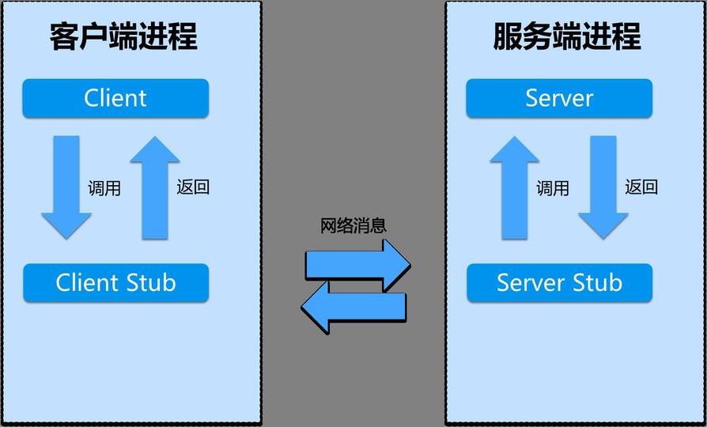
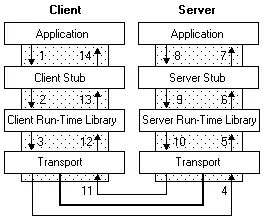

区别
传输协议：
- RPC，可以基于TCP协议，也可以基于HTTP协议
- HTTP，基于HTTP协议
传输效率：
- RPC，使用自定义的TCP协议，可以让请求报文体积更小，或者使用HTTP2协议，也可以很好的减少报文的体积，提高传输效率
- HTTP，如果是基于HTTP1.1的协议，请求中会包含很多无用的内容，如果是基于HTTP2.0，那么简单的封装一下是可以作为一个RPC来使用的，这时标准RPC框架更多的是服务治理
性能消耗：主要在于序列化和反序列化的耗时
- RPC，可以基于thrift实现高效的二进制传输
- HTTP，大部分是通过json来实现的，字节大小和序列化耗时都比thrift要更消耗性能
负载均衡：
- RPC，基本都自带了负载均衡策略
- HTTP，需要配置Nginx，HAProxy来实现
服务治理（下游服务新增，重启，下线时如何不影响上游调用者）：
- RPC，能做到自动通知，不影响上游
- HTTP，需要事先通知，修改Nginx/HAProxy配置
总结：
RPC主要用于公司内部的服务调用，性能消耗低，传输效率高，服务治理方便。HTTP主要用于对外的异构环境，浏览器接口调用，APP接口调用，第三方接口调用等。
RPC
RPC（Remote Procedure Call）：远程过程调用，它是一种通过网络从远程计算机程序上请求服务，而不需要了解底层网络技术的协议。
- 客户端（Client），服务的调用方。
- 服务端（Server），真正的服务提供者。
- 客户端存根（Client Stub），存放服务端的地址消息，再将客户端的请求参数打包成网络消息，然后通过网络远程发送给服务方。
- 服务端存根（Server Stub），接收客户端发送过来的消息，将消息解包，并调用本地的方法。
RPC主要是为了解决的两个问题：
- 解决分布式系统中，服务之间的调用问题。
- 远程调用时，要能够像本地调用一样方便，让调用者感知不到远程调用的逻辑。
假设Service A（Client）要调用Service B（Server）中Util类的handle方法：
- Service A的应用层代码中，调用了handle方法；
- 这个Util实现类，内部并不是直接实现handle逻辑，而是通过远程调用Service B的RPC接口，来获取运算结果，因此称之为Stub；
- Stub和Service B建立远程通讯需要用到远程通讯工具，也就是图中的Run-time Library，这个工具将实现远程通讯的功能，比如Java的Socket，就是这样一个库，当然，也可以用基于Http协议的HttpClient，或者其他通讯工具类都可以，RPC并没有规定要用何种协议进行通讯；
- Stub通过调用通讯工具提供的方法，和Service B建立起了通讯，然后将请求数据发给Service B。需要注意的是，由于底层的网络通讯是基于二进制格式的，因此这里Stub传给通讯工具类的数据也必须是二进制，然后传给通讯工具类；
- 二进制的数据传到Service B后，Service B使用自己的通讯工具接收二进制的请求；
- 然后将二进制的数据反序列化为请求对象，再将这个请求对象交给Service B的Stub处理；
- Stub负责解析请求对象，知道调用方要调的是哪个RPC接口，传进来的参数又是什么，然后再把这些参数传给对应的RPC接口，也就是Util的实际实现类去执行；
- RPC接口执行完毕，返回执行结果，二者交互角色，重复以上过程。